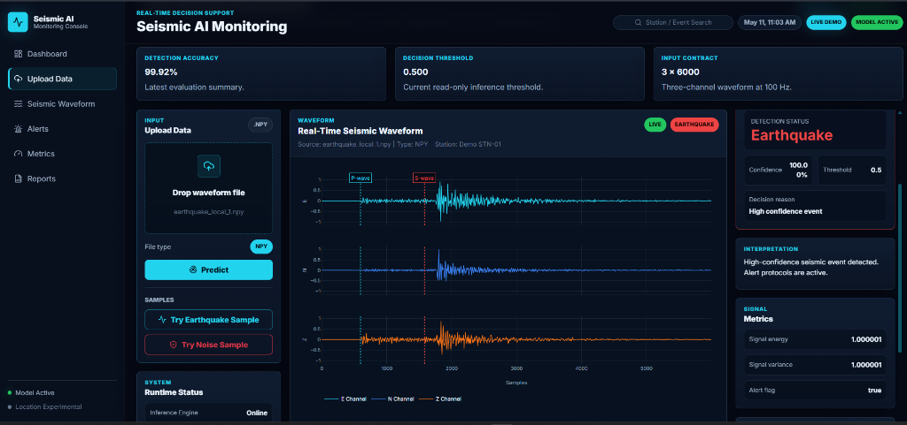
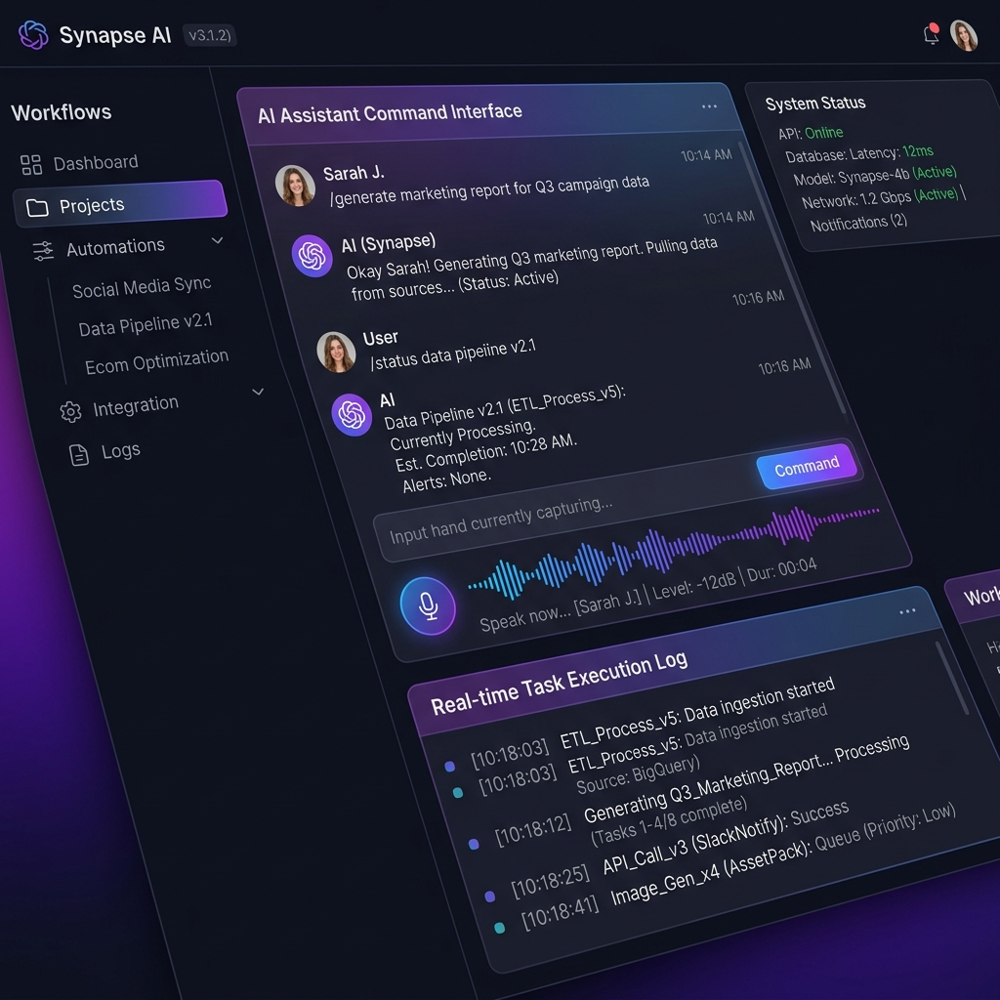
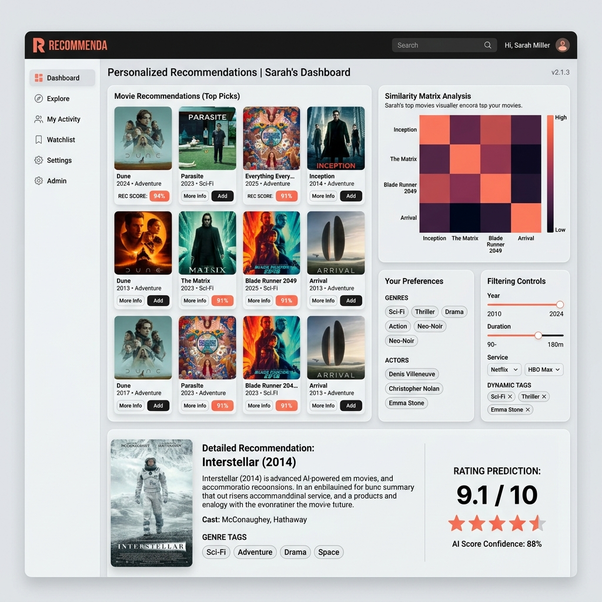
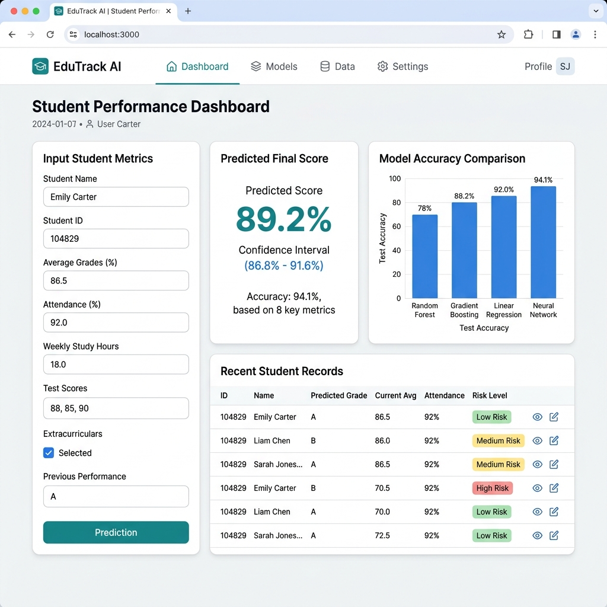
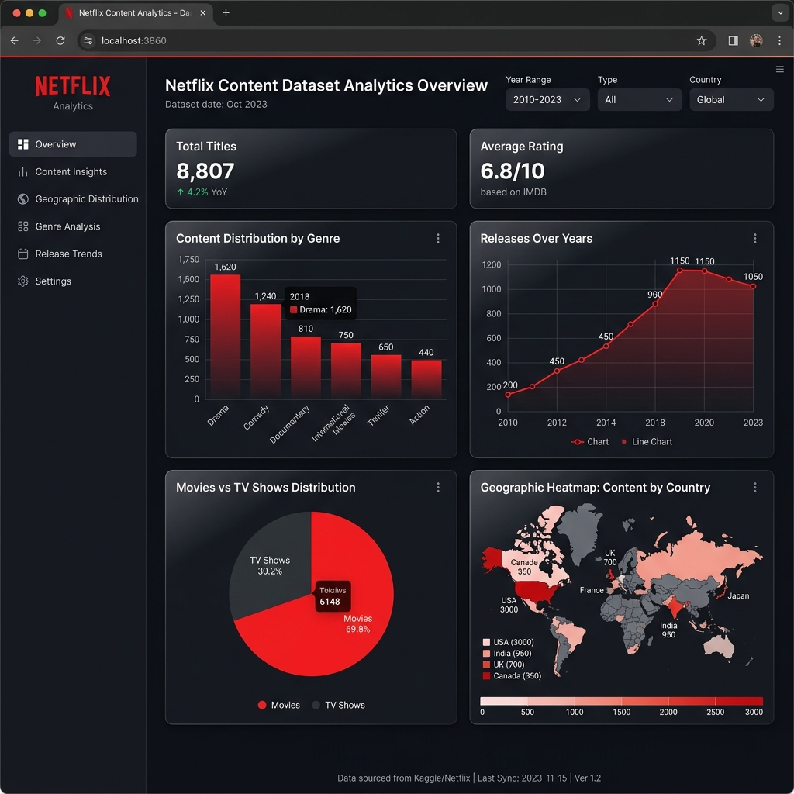

Aryan Singh
Machine Learning Engineer
Building real-time AI systems that work beyond notebooks
I design and deploy intelligent systems by combining machine learning, real-time data pipelines, and hardware integration to solve high-impact real-world problems.
Projects

Featured ProjectEarthquake Prediction & Seismic AI System
Real-time seismic signal classification system built using deep learning.
- Processed 1.2M+ seismic waveforms
- Built Conv1D-based model for temporal signal analysis
- Classified earthquake vs noise signals
- Predicted magnitude and wave arrival features
- Designed for real-time early warning system integration

Jarvis — AI Assistant System
Local AI assistant for real-time task execution and automation.
- Designed modular architecture for executing commands and workflows
- Integrated real-time interaction using text/voice inputs
- Built automation pipelines for system-level control

Movie Recommendation System
Personalized recommendation engine using machine learning techniques.
- Implemented content-based filtering
- Generated real-time movie recommendations
- Designed backend logic for fast retrieval

Student Result Prediction System
End-to-end machine learning pipeline for predicting student performance.
- Achieved ~87% accuracy across multiple models
- Built pipeline from preprocessing to prediction
- Deployed using Flask with interactive UI
Data Analysis Projects

Netflix Data Analysis
Exploratory data analysis on Netflix dataset.
- Identified trends in content distribution and genres
- Built visualizations for insights
- Analyzed release patterns and user behavior
Experience
Life-Link Network (Tech Syndicate)
Founder
Building a low-power, long-range off-grid communication system for mission-critical environments.
- Designed system for real-time emergency alerts and tracking
- Integrated AI with hardware modules and real-time data pipelines
- Focused on fault-tolerant, low-latency communication systems
AICTE IDEALAB (NIF)
Ambassador
- Promoted innovation and prototyping initiatives
- Worked in collaborative AI-focused environments
Global Next Consulting
Data Analyst Intern
- Conducted exploratory data analysis (EDA)
- Generated insights from structured datasets
- Improved data understanding and reporting
Pickl.AI
Data Analyst Intern
- Built Sales & Profit dashboards
- Created DAX measures and filters
- Identified key business trends
Achievements
About Me
Most AI models look good in notebooks — but fail in real-world conditions.
I work as a Machine Learning Engineer focused on building systems that operate reliably under real conditions, where latency, noise, and unpredictability matter.
My work combines deep learning with system-level thinking, including hardware integration and real-time pipelines, to build solutions that go beyond experimentation.
I have worked on:
- Real-time monitoring systems
- Predictive models integrated with hardware
- End-to-end ML pipelines from data to deployment
I believe AI should not stop at prediction — it should be fast, reliable, and usable in real-world environments.
Currently open to Machine Learning / AI Engineer roles in product-based companies.
Open to collaborations, internships, and interesting ML problems.
Let's build real-world AI systems
Interested in machine learning systems, real-world AI applications, or collaboration opportunities?
Get in Touch